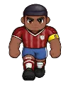

Wiki › Items › Drinks and potions › Stamina Bottle Medium

Stamina Bottle Medium
Drink / potion Level 35 Common
Restores 25% of your stamina (now: 520; never less than 520). Size 3 of 7: the bigger it is, the more it restores.
- Type
- Drink / potion
- Level
- 35
- Rarity
- Common
- Effect
- Restores 520 stamina
- Shop price
- 🪙 160
- Shop pays
- 🪙 30
Where it comes from
Dropped by (4)
| Opponent | Level | AmountQty | Chance | Where |
|---|---|---|---|---|
 Sheriff Defender | 57 | 1 | 20% | Legendary Stadium |
| Tank Striker | 50 | 1 | 15% | Legendary Stadium |
| Fitness Coach | 36 | 1 | 10% | Youth Training Center |
| 40 | 1 | 10% | Youth Training Center |
Where to buy
- Bia the Nutritionist — Training Center Cafeteria 🪙 160
- President Almeida — Legendary Stadium 🪙 160
- Dona Amália from the Pastry Shop — Lisbon — Bairro Alto 🪙 160
- Don Paco from the Churro Stand — Madrid — Plaza and Barrio 🪙 160
 Mr. Wallace from the Fish & Chips Shop — London — Camden and East End 🪙 160
Mr. Wallace from the Fish & Chips Shop — London — Camden and East End 🪙 160- Seu Karim from the Market — Cairo — On the Banks of the Nile 🪙 160
- Dona Yuki from the Onigiri Stand — Tokyo — Neon District 🪙 160
 Seu Rashid the Date Seller — Doha — City of Dunes 🪙 160
Seu Rashid the Date Seller — Doha — City of Dunes 🪙 160- Uncle Joe from the Food Truck — Miami — Ocean Drive 🪙 160
 Nonna Giulia from the Pizzeria — Milan — Piazza and Curva 🪙 160
Nonna Giulia from the Pizzeria — Milan — Piazza and Curva 🪙 160- Frau Helga from the Bakery — Munich — Clock Square 🪙 160
- Madame Colette from the Boulangerie — Paris — On the Banks of the Seine 🪙 160
- Doña Rosa from the Empanada Stand — Buenos Aires — La Boca 🪙 160
- Seu Tião the Mate Seller — Rio de Janeiro — Copacabana 🪙 160
- Seu Nenê the Pastel Maker — Santos — Waterfront and Vila Belmiro 🪙 160
 Masseur Bené — Campinho Village 🪙 160
Masseur Bené — Campinho Village 🪙 160 Masseuse Dora — Footvolley Beach 🪙 160
Masseuse Dora — Footvolley Beach 🪙 160 Masseur Juca — City — Futsal Courts 🪙 160
Masseur Juca — City — Futsal Courts 🪙 160 Masseuse Lúcia — Youth Training Center 🪙 160
Masseuse Lúcia — Youth Training Center 🪙 160 Masseur Tonho — Legendary Stadium 🪙 160
Masseur Tonho — Legendary Stadium 🪙 160 Masseur Samir — Cairo — On the Banks of the Nile 🪙 160
Masseur Samir — Cairo — On the Banks of the Nile 🪙 160 Masseuse Aiko — Tokyo — Neon District 🪙 160
Masseuse Aiko — Tokyo — Neon District 🪙 160 Masseuse Nadia — Doha — City of Dunes 🪙 160
Masseuse Nadia — Doha — City of Dunes 🪙 160 Masseur Joe — Miami — Ocean Drive 🪙 160
Masseur Joe — Miami — Ocean Drive 🪙 160 Masseuse Inês — Lisbon — Bairro Alto 🪙 160
Masseuse Inês — Lisbon — Bairro Alto 🪙 160 Masseur Paco — Madrid — Plaza and Barrio 🪙 160
Masseur Paco — Madrid — Plaza and Barrio 🪙 160 Masseuse Giulia — Milan — Piazza and Curva 🪙 160
Masseuse Giulia — Milan — Piazza and Curva 🪙 160 Masseur Hans — Munich — Clock Square 🪙 160
Masseur Hans — Munich — Clock Square 🪙 160 Masseuse Olivia — London — Camden and East End 🪙 160
Masseuse Olivia — London — Camden and East End 🪙 160 Masseuse Amélie — Paris — On the Banks of the Seine 🪙 160
Masseuse Amélie — Paris — On the Banks of the Seine 🪙 160 Masseur Tito — Buenos Aires — La Boca 🪙 160
Masseur Tito — Buenos Aires — La Boca 🪙 160 Masseuse Dalva — Rio de Janeiro — Copacabana 🪙 160
Masseuse Dalva — Rio de Janeiro — Copacabana 🪙 160 Masseur Zeca — Santos — Waterfront and Vila Belmiro 🪙 160
Masseur Zeca — Santos — Waterfront and Vila Belmiro 🪙 160